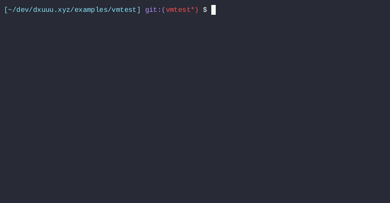
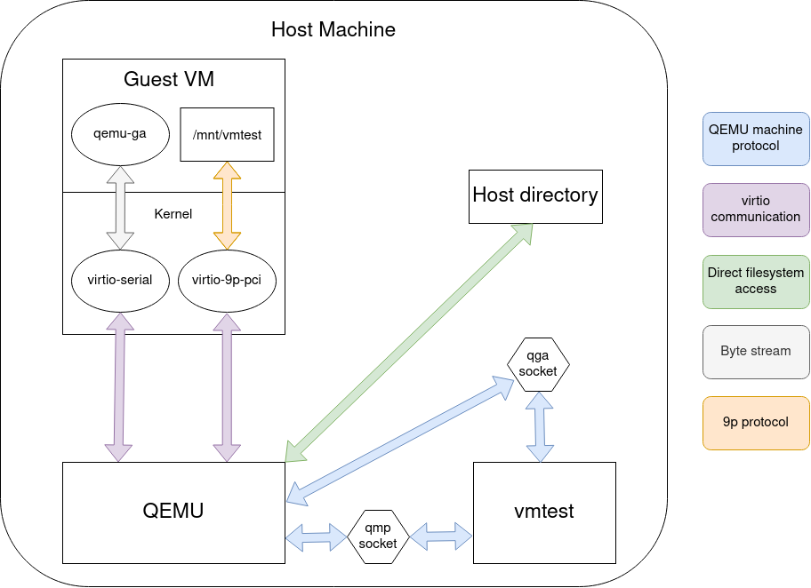

Systems software that depend on specific kernel or host properties often contains logic to gate functionality based on what features are available at runtime. This necessarily begs the question: how do you test platform specific logic? Mocks can help, but they come with their own set of tradeoffs. At the end of the day, there is no substitute for actually running your code.
eBPF (BPF) is somewhat of an extreme example because of how fast development occurs in that ecosystem. Most, if not all, BPF features are baked into the kernel, meaning that any non-trivial BPF-powered application heavily depends on kernel version. Since I do quite a bit of BPF development, the rest of this post is as a result, BPF focused. Despite that, keep in mind that all proposed techniques/solutions are quite general and can be applied to other domains.
Paradoxicaly enough, despite BPF being my motivation for
vmtest, BPF has excellent support for testing through BPF_PROG_RUN.
BPF programs are normally attached to a hook and only executed when
when the hook is reached by the kernel. BPF_PROG_RUN, on
the other hand, allows userspace to run BPF programs in “freestanding”
mode. More precisely, it allows userspace to both provide the input
context, run the program on demand, and collect the program’s return
value (among a few other things).
Contrast this with something like iptables where it
takes considerably more setup (network namespaces, fake network devices,
traffic generators, etc.) to get automated tests. And even after all of
that, it’s more of an integration test than a true unit test.
Basically given BPF_PROG_RUN, all that’s left to solve
is how to control the kernel your tests run on top of.
The primary goal is to create infrastructure that runs code inside target kernels. Along the way we may solve other problems or enable other use cases, but our primary goal will help inform our design decisions.
In addition, the following are design ideas (in decreasing order of importance) that will help inform our decisions:
vmtest should be as generic as
possible and adoptable across projects in different domains.vmtest should be able to run in
Github Actions. Supporting other providers would be even better.Our solution is two-fold: vmtest and vmtest-action.
vmtest is the workhorse binary and contains all the
logic to orchestrate qemu on the root host and
qemu-guest-agent inside the guest VM. Among other things,
it maps the running userspace into the guest VM as its rootfs. The end
result is that your host’s userspace “just runs”, except the kernel it’s
running under is different. The binary also supports a handful of
nice-to-have things such as a standard unix interface, a terminal user
interface, and support for multiple targets through a configuration
file.
vmtest-action is a Github Actions wrapper (ie. a
singular Github
Action) that downloads/installs vmtest as well as its
runtime dependencies. The action exposes a subset of the features
vmtest supports but at the same time adds a few
conveniences (such as URL asset downloads) – effectively tailoring
vmtest to CI usage.
The two part solution helps separate concerns but also allows for
novel uses cases such iterating on kernel changes using the
vmtest binary.
Consider the following vmtest.toml configuration:
[[target]]
name = "check if kernel is 6.2"
kernel = "./bzImage-v6.2"
command = "/bin/bash -c 'uname -r | grep -e ^6.2.0$'"
[[target]]
name = "check if kernel is 6.1"
kernel = "./bzImage-v6.2"
command = "/bin/bash -c 'uname -r; uname -r | grep -e ^6.1.0$'"The above has two targets: the first target checks if the running
kernel is v6.2 and the second checks if the running kernel is v6.1.
Since they’re both going to run under a v6.2 kernel, only the first
target should succeed. Carefully note here that we do not define a
rootfs or run install scripts to get access to bash and
coreutils – the entire running userspace on your host is
shared into the VM.
This is what a run looks like:

Note that our second target fails as expected.
Now pretend you have a bog standard Github Actions (GHA) workflow. It has fairly standard steps – for example installing dependencies, build configuration, and executing a test runner. This workflow implicitly uses the kernel the GHA runner’s kernel. Perhaps it was new enough for a while but now it’s too old and you need to find a way to run your tests against a matrix of newer kernels.
vmtest-action would satisfy your needs with the
following diff:
diff --git a/.github/workflows/ci.yml b/.github/workflows/ci.yml
index 4b1d68f..d62fed9 100644
--- a/.github/workflows/ci.yml
+++ b/.github/workflows/ci.yml
@@ -7,6 +7,16 @@ on:
jobs:
build:
+ strategy:
+ matrix:
+ kernel:
+ - name: v6.0
+ url: https://github.com/danobi/vmtest/releases/download/test_assets/bzImage-v6.0
+ - name: v6.1
+ url: https://github.com/danobi/vmtest/releases/download/test_assets/bzImage-v6.1
+ - name: v6.2
+ url: https://github.com/danobi/vmtest/releases/download/test_assets/bzImage-v6.2
+
runs-on: ubuntu-latest
steps:
- uses: actions/checkout@v3
@@ -21,5 +31,8 @@ jobs:
ninja -C build
- name: Run
- run: |
- ./build/vmtest-action-demo
+ uses: danobi/vmtest-action@master
+ with:
+ name: ${{ matrix.kernel.name }}
+ kernel_url: ${{ matrix.kernel.url }}
+ command: ${{ github.workspace}}/build/vmtest-action-demoNote how the dependency install, configure, and build steps are being run outside the VM. This is desirable b/c anything running inside the VM is liable to be slower in the event emulation is necessary.

The first big idea is that vmtest tries to orchestrate everything through QEMU’s programmable interfaces, namely the QEMU machine protocol (QMP) for orchestrating QEMU and qemu-guest-agent (which also uses QMP under the hood) for running things inside the guest VM. Both interfaces use a unix domain socket for transport.
Using QEMU’s programmable interfaces is probably the only novel
contribution we make to this problem space. The other ideas (even the
name) are shamelessly borrowed from other folk’s earlier explorations.
This contribution, however, makes developing and extending
vmtest a much saner and pleasant experience over things
like triple-escaping shell commands. qemu-guest-agent alone gives us a
clean out-of-band mechanism (so not requiring networking or SSH) to run
commands inside the guest.
The second big idea is that we use 9p filesystems to share the host
filesystem inside the guest. This is useful so that vmtest targets can
import/export data in bulk without having to specify what to copy. In a
kernel target, vmtest exports two volumes: /mnt/vmtest and
the root filesystem. The first volume is the directory rooted by
vmtest.toml mounted read/write. The latter export
effectively gives the guest VM the same userspace environment as the
host, except we mount it read-only so the guest cannot do too much
damage to the host.
vmtest is only just getting started. By the time it goes
into maintenance mode, there should be no excuse to be missing VM-based
testing from your development workflows.